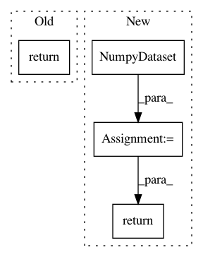

c09ca92e84f45c61f9213a32c7f01627fd467174,deepchem/models/tensorgraph/tensor_graph.py,TensorGraph,predict_on_batch,#TensorGraph#Any#Any#,161
Before Change
retval = self.predict_proba_on_batch(X, sess)
if self.mode == "classification":
return from_one_hot(retval, axis=2)
return retval
def predict_proba_on_batch(self, X, sess=None):
def predict():
After Change
// Returns
A Numpy array of predictions.
dataset = NumpyDataset(X=X, y=None)
generator = self.default_generator(dataset, predict=True, pad_batches=False)
return self.predict_on_generator(generator)
def predict_proba_on_batch(self, X, sess=None):
dataset = NumpyDataset(X=X, y=None)
generator = self.default_generator(dataset, predict=True, pad_batches=False)
In pattern: SUPERPATTERN
Frequency: 3
Non-data size: 4
Instances
Project Name: deepchem/deepchem
Commit Name: c09ca92e84f45c61f9213a32c7f01627fd467174
Time: 2017-04-12
Author: Karl
File Name: deepchem/models/tensorgraph/tensor_graph.py
Class Name: TensorGraph
Method Name: predict_on_batch
Project Name: deepchem/deepchem
Commit Name: 0882178fb3a66983de084954493a00753c272697
Time: 2020-06-26
Author: peastman@stanford.edu
File Name: deepchem/models/keras_model.py
Class Name: KerasModel
Method Name: predict_on_batch
Project Name: deepchem/deepchem
Commit Name: c09ca92e84f45c61f9213a32c7f01627fd467174
Time: 2017-04-12
Author: Karl
File Name: deepchem/models/tensorgraph/tensor_graph.py
Class Name: TensorGraph
Method Name: predict_proba_on_batch